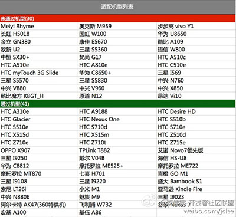

News:Starling 100Questions
Starling新手一百问
以下问题是Starling新手经常会遇到的问题，Starling中文站特整理在这里以方便大家查阅(内容持续更新中)：
欢迎您将自己初学Starling时遇到的问题（最好附上解决方案），投稿至guoshaorui@126.com
Q1 - Starling是什么，我是否应该选择Starling做我的应用或游戏？
答：简单说，Starling是一个ActionScript类库，模拟传统Flash的显示列表机制，但渲染是通过Stage3D进行的，利用GPU加速实现高效的渲染。更多介绍可以参阅中文站首页的介绍部分。
至于是否应该选择Starling完成您的应用或游戏，需要综合考虑多方面的因素。我们也建议您在项目开始之前，先充分了解自身项目需求，和备选技术方案以及框架的特点。
- 分析项目特点：Starling是Flash类库，也就是说在确定是否使用Starling之前，您需要先确定是否选择Flash技术。这就需要您回答两个问题：您的项目是应用还是游戏，目标平台是PC还是移动设备。纯应用类型，比如用于移动设备的新闻阅读器，从技术角度用Flash或结合Starling是可以实现的，但从实施成本考虑，可能选择HTML5+PhoneGap这样的方案更合适一些，毕竟处理流式布局和文本混排是HTML的强项。如果是游戏类型，则Flash和Starling可以发挥更大的优势。众所周知，在PC的网游领域，Flash占据了统治地位，而在游戏日益复杂化和追求体验的今天，使用Stage3D的硬件加速来提升性能和体验也是Flash游戏领域的趋势（最新的Stage3D也加强了硬件兼容，在约束模式下，可以兼容超过90%的现有机型）。不论您是2D还是3D游戏，都可以结合Starling来使用（Starling可以配合Away3D等框架）。在移动设备上，Flash的策略是通过APP打包的形式进入，而且由于移动设备的硬件限制，效率问题显得非常突出，这个时候选择Starling等基于Stage3D的2D框架，可以很大程度上缓解性能问题(指渲染方面，计算方面的瓶颈可以借助ANE解决)，参见这里的一篇评测。另外移动设备上目前使用Stage3D或基于Stage3D的框架，您还需要考虑机型适配的问题：目前iOS设备大都支持Stage3D，但Android领域则复杂一些，参考下面的图片。如果您做Android应用碰巧所选设备不支持Stage3D，那么可以考虑传统的位图引擎，或结合其它优化技巧来提升执行效率。
- 
- 自身团队配置： 如果您的团队大都是Flash开发人员，并且传统ActionScript编程经验丰富，那么项目选择Flash和Starling就更合适一些。如果您的团队成员有3D相关开发经验就更好，因为这样更容易Stage3D方面的底层知识，也更容易了解性能优化技巧。
- 框架选择： 如果您决定采用一个Stage3D的2D框架，那么除了Starling，还有Genome2D，ND2D，ARE2D等可供选择，不同的框架有其不同的特点。Genome2D以极高的效率著称，ND2D也是老牌框架（似乎没有更新，评测也发现它对移动设备的优化很差），ARE2D是新兴的主打性能牌的国产框架。Starling的特点在于它的低门槛和极好的API封装，和丰富的文档支持，当然还有Adobe的官方支持。执行效率也得到了极大的改善，特别是批次处理的优异表现让人印象深刻。
- 性能优化： 并非选择了Starling就可以做出高效的游戏，如果使用不当，也可能引发很多问题，毕竟基于Stage3D的渲染还是和传统的渲染方式有很大的不同。选择Starling的时候，也建议您多了解Stage3D底层知识，以及相关的优化技巧。
- 另外很多人非常关心，是否已经有基于Starling开发的成熟的商业应用，可以参阅这里。其中比较知名的包括：《愤怒的小鸟FaceBook版》（PC应用），《鲸鱼岛的冬天》（iOS应用）。
Q2 - 为什么用IE测试Starling项目的时候会报运行时错误，单独Player运行则没有问题？
答：IE中的Flash Player有一个问题，当您设置stage.align和stage.scaleMode的时候，紧跟其后的语句会得不到正确的stage尺寸，如果接下去就是Starling的初始化语句，那么Starling就会在初始化的时候报错。解决方式是可以在设置stage.align和stage.scaleMode之后，延迟Starling的初始化工作，就可以回避这个问题。
具体代码可以参见这里：StarlingManual:快速实例代码
Q3 - Starling有没有视频教程可供学习呢？
答：有，不过是英文的（中文视频教程，国内的知名开发者A闪正在制作中，可以关注他的网站，等推出的时候我会同步更新到这里）。
推出较早的有印度Adobe布道者Hsharma发布的《Starting with Starling》序列，已推出的包括：
另外来自Adobe的大师Lee Brimelow也在Lynda.com发布了他的视频教程《Building Flash Games with Starling》。
Q4 - Starling中如何开启多点触摸呢？
答：开启多点触碰，必须在Starling对象初始化完毕之前设置Starling.multitouchEnabled = true; 然后就可以侦听TouchEvent.TOUCH事件来获得所有的触碰点。
参见下面的例子（根据Starling本身提供的例子修改而来，必要部分做了注释）:
package game { import flash.display.Bitmap; import flash.display.BitmapData; import flash.events.GestureEvent; import flash.events.TransformGestureEvent; import flash.geom.Point; import flash.ui.Multitouch; import flash.ui.MultitouchInputMode; import starling.core.Starling; import starling.display.Image; import starling.display.Sprite; import starling.events.Event; import starling.events.Touch; import starling.events.TouchEvent; import starling.events.TouchPhase; /** * 测试多点触摸 * @author shaorui * */ public class Game1 extends Sprite { [Embed(source="../assets/Starling_logo.png")] private var logoClazz:Class; private var logo:Image; public function Game1() { super(); this.addEventListener(Event.ADDED_TO_STAGE,initGame); } /**开始*/ private function initGame(event:Event):void { var mStarling:Starling = Starling.current; //开启触碰模拟器，便于PC测试 mStarling.simulateMultitouch = true; //添加一个Image用于测试 var logoBmp:Bitmap = new logoClazz() as Bitmap; logo = Image.fromBitmap(logoBmp); addChild(logo); //侦听Touch事件 addEventListener(TouchEvent.TOUCH, onTouch); //如果要侦听Flash原生手势，可以这样 Multitouch.inputMode = MultitouchInputMode.GESTURE; Starling.current.nativeStage.addEventListener(TransformGestureEvent.GESTURE_SWIPE,gestureSwipeHandler); } /**滑屏事件*/ private function gestureSwipeHandler(event:TransformGestureEvent):void { trace(event); } /**处理Touch事件捕获后的进一步操作*/ private function onTouch(event:TouchEvent):void { //得到触碰并且正在移动的点（1个或多个） var touches:Vector.<Touch> = event.getTouches(this, TouchPhase.MOVED); //如果只有一个点在移动，是单点触碰 if (touches.length == 1) { var delta:Point = touches[0].getMovement(this); logo.x += delta.x; logo.y += delta.y; } //如果有两个点，可以认为是旋转和缩放 else if (touches.length == 2) { //得到两个点的引用 var touchA:Touch = touches[0]; var touchB:Touch = touches[1]; //A点的当前和上一个坐标 var currentPosA:Point = touchA.getLocation(this); var previousPosA:Point = touchA.getPreviousLocation(this); //B点的当前和上一个坐标 var currentPosB:Point = touchB.getLocation(this); var previousPosB:Point = touchB.getPreviousLocation(this); //计算两个点之间的距离 var currentVector:Point = currentPosA.subtract(currentPosB); var previousVector:Point = previousPosA.subtract(previousPosB); //计算上一个弧度和当前触碰点弧度，算出弧度差值 var currentAngle:Number = Math.atan2(currentVector.y, currentVector.x); var previousAngle:Number = Math.atan2(previousVector.y, previousVector.x); var deltaAngle:Number = currentAngle - previousAngle; //将旋转的中心点设置为两个触碰点的中心点 var previousLocalA:Point = touchA.getPreviousLocation(logo); var previousLocalB:Point = touchB.getPreviousLocation(logo); logo.pivotX = (previousLocalA.x + previousLocalB.x) * 0.5; logo.pivotY = (previousLocalA.y + previousLocalB.y) * 0.5; //将LOGO坐标设置为两个触碰点的中心点 logo.x = (currentPosA.x + currentPosB.x) * 0.5; logo.y = (currentPosA.y + currentPosB.y) * 0.5; //旋转 logo.rotation += deltaAngle; //缩放 var sizeDiff:Number = currentVector.length / previousVector.length; logo.scaleX *= sizeDiff; logo.scaleY *= sizeDiff; } } } }
不过目前有个问题是Starling不支持Flash Pro中的模拟触碰测试功能，您只能用Starling自带的模拟测试或使用真实设备进行测试。
Q5 - 什么是约束模式？和分辨率有什么冲突？
答：Starling1.2默认运行在约束模式(constrained)下面,在这种模式下面,它会强制限制上下文(context)的边界始终在舞台的边界以内.更通俗的说法就是你当前屏幕的分辨率小于或者等于程序要求的舞台的宽度或者高度,比如你程序舞台大小为1024x768,你的屏幕的分辨率为1280x768,就会出现上面这个错误.Error #3723: Invalid Context3D bounds.
Q6 - 如何结合stageWidth,stageHeight以及viewPort实现屏幕分辨率适配呢？
答：在Starling中，Starling.stage.stageWidth,Starling.stage.stageHeight,Starling.viewPort都可能引起缩放。如果3者完全保持一致，就不会缩放。
首先看stageWidth。Starling的stage允许设置stageWidth和stageHeight，一旦你设置了，Starling就会判断真实的Stage层的宽度和高度，和你设置的值之间的比例关系。
假设你放置了一张400*300像素的图在场景上，同时设置Starling.stage.stageWidth,Starling.stage.stageHeight分别为400和300，而实际运行起来的Flash的Stage的宽高分别是800*600，那会发生什么？你的图片会被放大一倍。
而这时，如果你又设置了viewPort = [200,150,400,300];会发生什么？Starling会将这个区域作为可视区域，只有这个区域内的内容才能可见。而这时由于实际场景的宽度和高度比可视区域大，Starling为了保证内容可见，会把可视内容，再次缩放到可视区域的范围。也就是我们的图片，又被缩放到400*300了（正好是原始大小），并且被挪到屏幕中央。
希望您看到这些说明能了解Starling的缩放处理机制。
Q7 - Starling中的中文字体应该如何处理？可否使用位图字体？
答：Starling支持使用位图字体，但位图字体不太适合中文（中文字符集太大，不像拉丁语系的那种很小的字符集合）。
Q8 - Starling有没有UI框架可供使用？
答：目前ActionScript领域成熟的UI框架不多（Adobe的Flex框架因为过于庞大复杂，只在企业级开发中比较适用），轻量级的更少（ASwing也已经不算轻量级了）。而Starling作为一个新兴框架，由于其渲染的特殊性（基于Stage3D进行渲染），像ASwing这些框架还未对Stage3D框架进行支持。
不过好消息是，有开发者专为Starling封装了一套UI组件：Foxhole。
简介和下载地址：http://wiki.starling-framework.org/extensions/foxhole
更新：Foxhole已经更名为Feathers UI，成为Adobe支持的正式类库。
参阅： http://www.starlinglib.com/wiki/News:Starling_Feathers
Q9 - 如何处理类名冲突导致的问题？
答：因为Starling的很多类名和传统Flash的完全一致，所以在不得不同时使用两种类型的场合，会有冲突（在Starling的官方论坛上这个讨论也有很多，不过作者遵循多数人的意见，没有给类加ST前缀），目前我们只能通过一些技巧来避免这种冲突。
包全路径引用
通过将路径完整书写的方式，来明确指定使用哪个包的类：
var starlingSprite:starling.display.Sprite = new starling.display.Sprite(); var nativeSprite:flash.display.Sprite = new flash.display.Sprite();
命名空间
package game.ns { public namespace classicDisplay = "flash.display"; } package game { import game.ns.classicDisplay; import starling.display.Sprite; use namespace classicDisplay; public class Game2 extends Sprite { public function Game2() { super(); var starlingSprite:Sprite = new Sprite(); var nativeSprite:classicDisplay::Sprite = new classicDisplay::Sprite(); } } }
反射
var starlingSprite:Sprite = new Sprite(); var nativeSpriteClass:Class = getDefinationByName("flash.display.Sprite") as Class; var nativeSprite:Object = new nativeSpriteClass();
Q10 - Starling中如何动态绘制图形？
答：Starling允许大家动态的直接创建自定义纹理。但是我们没有为这个特性重新发明轮子。Starling只是简单的利用了flash强大的矢量能力。 对于矢量内容，Flash提供Graphics类。大家可以通过访问这个类来绘制任何sprite或shape。
var shape:Shape = new Shape(); shape.graphics.beginFill(Color.MAROON); shape.graphics.drawCircle(50, 50, 30); shape.graphics.endFill(); shape.filters = [ new DropShadowFilter() ];
我们只是创建了一个简单的带有投影的红色圆形。但是这个对象不能显示到Starling的显示列表——毕竟，他是flash的显示对象。 但是我们可以将这个形状绘制到一个位图然后从位图创建一个纹理！
var bmpData:BitmapData = new BitmapData(100, 100, true, 0x0); bmpData.draw(shape); var texture:Texture = Texture.fromBitmapData(bmpData); var image:Image = new Image(texture); addChild(image);
这是一个非常强大的技术，因为所有的flash显示对象都可以绘制到位图！只要记住每帧创建一个位图会很慢，所以这项技术并不适合来创建动态的动画。
Q11 - Starling中可否使用滤镜和遮罩？
答：只要将Starling的代码更新到最新的版本，您就会发现在显示对象上增加了一个新的属性："filter"。您可以给它附加任何已经提供好的简单滤镜（在"starling.filters"包中）。
这些是已经可用的滤镜:
- - "IdentityFilter" - 什么都不做，其实目的是让您了解如何创建自己的滤镜
- - "InverseFilter" - 反转颜色
- - "GrayscaleFilter" - 灰度滤镜
- - "ColorMatrixFilter" - 就像Flash提供的那个一样
- - "BlurFilter" - 就像Flash提供的那个一样
要创建一个阴影滤镜，请调用 "BlurFilter.createDropShadow()";要创建一个发光滤镜，请调用"BlurFilter.createGlow()"。
这个滤镜的架构是非常好的，您可以很方便的创建自己的滤镜。实际上，我认为这是一个非常好的学习AGAL的方式！看看 "IdentityFilter" 和 "InverseFilter"这两个类吧，您就会了解自己该怎么做：实际上您只需要覆盖其中的两个方法。
要注意目前的模糊滤镜有一个问题：您必须在"baseline"模式下运行Starling（Starling 1.2 的默认值是 "baselineConstrained"）。在之前的AIR测试版中这是可以工作的，所以我认为我的代码应该可以在这个模式下工作，我需要做进一步的检查。在此期间，您只能在"baseline"模式下做测试。
至于遮罩，作者已经在考虑之中，有可能在下一个版本提供。目前您可以试试这个扩展：http://wiki.starling-framework.org/extensions/clippedsprite 。
Q12 - ATF是什么格式？如何使用？
答：很多人都在找ATF格式的详细信息，Starling论坛上公布了它的最新动态：Starling作者正在和Adobe协作，在框架层面加上对ATF格式的流程支持。这个格式非常强大，可以用命令行把一个PNG文件转换为ATF文件（包含针对不同设备的文件类型Android (ETC1), iOS (PVRTC) , Windows and MacOS (DXT)）。Flash Player和AIR会自动根据运行平台选择合适的格式。
这个格式的特性包括：
- 更快的渲染速度；
- 更低的纹理内存占用；
- 更快的纹理上传；
- 更小的应用体积。
关于ATF格式的更多说明和下载参见： http://www.starlinglib.com/wiki/News:Stage3D_compressed_textures
Q13 - Starling的事件和传统Flash事件有什么不同？
答：Starling的事件系统和传统Flash事件非常相似，但是，Starling 所实现的事件传递，在一些细节上与原生的有一些有趣的差异。Starling 只支持事件 传递过程中的冒泡阶段（bubbling phase），而没有捕获阶段（capture phase）。
您可以从这里了解Starling中事件的使用方式：StarlingManual:事件捕获。
另外需要注意，Starling 1.2的版本开始对事件系统做了一些微调：
- 提供一个新的方法来派发事件，"dispatchEventWith"，Starling在屏幕背后用对象池缓存了这些对象。这样可以避免产生过多的事件对象。
- 标准事件类增加了一个新的"data"属性，可以用来附加任何类型的数据，这样您可以避免经常生成新的Event子类。
- 事件处理方法现在可以拥有零个，一个或两个参数。如果您不需要事件对象，为什么必须要接受它呢？而两个参数的版本，则可以让您更方便的访问"data"属性。
Q14 - Starling中纹理占用的内存如何估算？
答：目前普遍认为，Flash中位图和纹理存储方式为32位4字节RGBA方式（红绿蓝+透明度），也就是说，一个像素需要占用4个字节。那么一个1024像素的位图，需要占用1024*1024*4/1024/1024 = 4MB的内存空间。
Q15 - 什么是mipmap映射？如何使用？
答：摘自维基百科：在三维计算机图形的贴图渲染中有一个常用的技术被称为mipmapping。为了加快渲染速度和减少图像锯齿，贴图被处理成由一系列被预先计算和优化过的图片组成的文件,这样的贴图被称为 MIP map 或者 mipmap。这个技术在三维游戏中被非常广泛的使用。“MIP”来自于拉丁语 multum in parvo 的首字母，意思是“放置很多东西的小空间”。Mipmap 需要占用一定的内存空间，同时也遵循小波压缩规则 （wavelet compression）。
Mipmap中每一个层级的小图都是主图的一个特定比例的缩小细节的复制品。虽然在某些必要的视角，主图仍然会被使用，来渲染完整的细节。但是当贴图被缩小或者只需要从远距离观看时，mipmap就会转换到适当的层级。事实上，在三线性过滤（trilinear filtering）起作用时，会在两个相近的层级之间切换。
因为mipmap贴图需要被读取的像素远少于普通贴图，所以渲染的速度得到了提升。而且操作的时间减少了，因为mipmap的图片已经是做过抗锯齿处理的，从而减少了实时渲染的负担。放大和缩小也因为mipmap而变得更有效率。+
如果贴图的基本尺寸是256x256像素的话,它mipmap就会有8个层级。每个层级是上一层级的四分之一的大小，依次层级大小就是：128x128;64x64;32x32;16x16;8x8;4x4;2x2;1x1(一个像素)。例如在一个场景中，渲染贴图需要填满的空间大小是40x40像素的话，如果没有三线性过滤，那32x32 会被放大显示，或者有三线性过滤，会在64x64和32x32之间切换。最简单的生成贴图的方法就是依次做平均，当然也可以用更加高级的算法。
在Starling中创建Texture的时候，默认是开启mipmap的，这样可以优化纹理缩放时的显示效果和执行效率，代价就是需要更多的内存。如果需要关闭mipmap映射，您可以在调用Texture.fromBitmapData或Texture.fromBitmap的时候，设置第二个参数generateMipMaps为false。
Q16 - 如何解决应用或游戏在iOS设备上闪退的问题？
答：在使用Stage3D（及依赖它的2D框架）的时候，应用或游戏出现闪退的大多数原因是：内存不够用了。Flash曾以它的矢量图形（极低的内存占用）而著名。但移动设备不喜欢也不擅长处理矢量，因为矢量图形主要依赖CPU的计算，为了充分利用GPU来减轻CPU的负载，我们会尽量把素材做成位图的形式来代替矢量图形，这样带来的副作用就是：位图需要更多的存储空间。
在低端iOS设备上，比如iPad 1代，物理内存非常少（256MB），显存也是从内存中共享的，这样应用本身可用的内存已经非常有限，这个时候如果突然向GPU提交大量纹理，就有可能造成内存不足，应用退出。所以要提前预算，尽量控制同时向GPU提交的纹理数量，及时销毁不再使用的纹理，释放内存。
Q17 - Starling中如何处理Context丢失的问题？
答：在某些系统和某些条件下（例如，从系统睡眠中返回），Starling的stage3D渲染内容会丢失。如果类属性“handleLostContext” 设置为 “true” Starling会自动修复丢失内容。但是需要注意，这是以提高内存消耗为代价的。Starling会在内存中创建纹理缓存，这样在内容丢失时才可以修复它。
如果你想和丢失的内容交互，Starling在这个内容修复时发送"Event.CONTEXT3D_CREATE"事件，你可以在相对应的事件监听器中重新 创建这些不可用资源. 建议在Android和Windows下启动，在Mac OS X和iOS中禁用。
Q18 - Starling应用中导致FPS大幅下降的原因可能是什么？
答：FPS下降，您需要确定是算法问题还是显示渲染问题。算法问题，比如在每帧进行物理弹性计算，如果计算量过大，会导致Flash的弹性跑道变长，表现出来就是FPS下降。如果出现这种问题，需要进行算法优化，必要的话，可以借助Alchemy或ANE等技术方案进行优化。
显示渲染问题，主要是指在Starling中，在每一帧执行了过多的绘制方法调用（反映在Stats显示上就是DRW值过高），这可能跟您对素材的处理方式不够完善有关系。参阅：Starling性能优化
Q19 - Starling中如何使用骨骼动画？
答：可以参考微博上@打错了啊开发的工具，参见：
Q20 - Starling对象的dispose方法作用是什么？是否有效？
答：不同对象的dispose方法的作用不同，对于纹理来讲，这会销毁纹理数据，释放内存空间。而对于MovieClip等对象来说，dispose的作用只是删除事件侦听，并不会销毁附加的纹理，这一点需要注意，纹理需要您手动销毁。
Q21 - Starling应用中如何尽量节省内存？
答：这一个寻找平衡点的过程。比较矛盾的地方在于，为了提高应用的渲染效率，响应速度，我们需要尽量提前将大批次的纹理提交给GPU，而且尽量不销毁，这样在下次使用的时候就可以非常快速的切换。但这样就带来了较高的内存占用，在可用内存较少的设备上甚至会“闪退”。这样就要求我们，只能做一些牺牲，销毁掉不会马上调用的纹理，来降低内存占用。
另外尽量减少素材的位图面积，也是可行的方法，比如使用骨骼动画，就可以极大的缩减需要的素材（但缺点可能是骨骼动画的合成需要更高的CPU占用）。这个没有必胜法宝，只能在实践中不断寻找都可以接受的平衡点了。
Q22 - Starling应用能否和普通Flash显示内容协作？
答：可以，但要注意性能问题。在PC上性能问题不是太明显，像《愤怒的小鸟》的Facebook版，就是采用了Starling和传统Flash显示内容的结合：Starling负责游戏画面的渲染和交互，而控制暂停等操作的工具面板则是Flash传统显示对象实现的。而在移动设备上，如果这样做的话，您就要不断测试这样对性能的影响程度（作者的建议是尽量不要和传统显示列表对象整合）。如果不得已您需要做整合的话，就要尽量避免他们的同时渲染，比如当传统Flash显示对象出现的时候，就把Starling部分的渲染停止，反之亦然。
Q23 - Starling中能否继续使用stage3Ds[1],stage3Ds[2]？
答：你可以在Starling的构造函数的参数中明确指定使用某一个Stage3D对象，但要小心，确保不要索引超出，因为在一些设备上，只有一个Stage3D对象可用。
Q24 - Starling的电影剪辑没有gotoAndStop怎么办？
答：直接设置myMovieClip.currentFrame = \d即可。
Q25 - Starling中如何显示可选择的动态文本？
答：需要在传统Flash显示列表中使用传统动态文本来解决。
Q26 - Starling中的坐标系和传统Flash坐标系是否一致？
答：基本一致。
Q27 - Starling有没有粒子系统？
答：当然有，从这里下载：Starling粒子系统
强悍的粒子编辑器：
http://onebyonedesign.com/flash/particleeditor/
Q28 - 状态显示中的DRW是什么意思？
答：在Starling 1.2中，在Stats显示中增加了DRW值，这个功能不大但很有用：展示每帧的绘制方法调用次数。这将让您可以更容易的发现自己的性能问题，判断自己是否用正确的方式处理了显示列表。
此外，您现在可以使用 "starling.showStatsAt()"，定义状态显示的位置。
Q29 - 个别浏览器无法输入中文怎么解决？
答：准确的说，这个并不是Starling的问题，是Flash的老问题了，无论基于Stage3D的Starling还是传统的显示列表都会遇到。 溯源来说，这个问题其实不只是Adobe的问题，还和各个浏览器厂商有关。
解决方法主要有以下几种：
1、要求用户升级浏览器的最新版本以及FlashPlayer的最新版本。
此问题大部分出现在旧版本的FireFox、Chrome以及FlashPlayer 10.2以下和11.1版本中，如果用户升级到新版本，可以解决大部分无法输入的问题
2、使用JavaScript解决
方法一并不是最优秀的解决方案，毕竟有时候让用户升级浏览器会造成不好的用户体验，使用JavaScript可以根本上解决这个问题，其核心思路如下：
a、侦听输入文本的Focus事件，当用户将焦点放在输入文本中时，侦听函数通过ExternalInterface.call()调用一个JavaScript函数，由JavaScript在Flash页面的上方同位置创建一个HTML的输入文本，并将焦点放在HTML上
b、用户开始输入文本，看起来是输入在了Flash区域中，其实则是输入到了刚才创建的HTML输入文本中
c、当用户完成输入操作时，调用JavaScript，移除HTML文本，并获取文本内容
Q30 - Starling应用中能否使用StageVideo？
答：可以。但注意Flash显示层的关系是(从下到上)： StageVideo -> Stage3D -> Stage -> StageWebView 。
您一定注意到了，StageVideo的显示层级是最低的，运行在Stage3D层的Starling应用，会遮挡StageVideo的内容，并且目前悲催的是，Stage3D层不支持透明。这就意味着您不能像处理普通显示对象叠加那样，试图让视频显示出来。要显示StageVideo，必须先隐藏Stage3D层。目前似乎直接调用Stage3D.visisble=false在移动设备上会有问题，另一个方式是：
//需要显示StageVideo的时候，设置viewPort为一个不可见的区域 mStarling.viewPort = new Rectangle(-32,-32,32,32); //当StageVideo使用完毕的时候，再设置回来 mStarling.viewPort = new Rectangle(0,0,1024,768);
对于使用纯Stage3D的情况，可以这样：
//mStage3D is Stage3D, mContext is Stage3DContext function hideStage3DLayer():void { var rect:Rectangle = new Rectangle(-32,-32,32,32); mContext.configureBackBuffer(rect.width,rect.height); mStage3D.x = rect.x; mStage3D.y = rect.y; } function showStage3DLayer():void { var rect:Rectangle = new Rectangle(0,0,1024,768); mContext.configureBackBuffer(rect.width,rect.height); mStage3D.x = rect.x; mStage3D.y = rect.y; }
Q31 - Starling可以和Flex一起用吗？
答：区分使用场合。
- PC浏览器中的Flex网站，要整合Starling应用的话，需要做“挖空”处理（因为Flex的组件是在传统Stage层上的，如果您还记得每个层级的关系，就很容易理解这一点）。默认情况下，Flex会给Application容器（也就是Flex的顶级容器）设置背景色，这就导致Starling层的内容被遮挡，无法显示。您可以设置Application的backgroundAlpha=0，并且在Starling内容运行的区域上面，不要遮挡Flex组件，这样Starling的内容就可以显示出来了。
- 移动应用，建议不要将Flex和Starling整合，虽然理论上是可行的，但实际执行效率估计会让您发疯。Flex的组件体系非常复杂和庞大，本身在移动设备上运行就不具备效率优势，和Starling的整合可能更加雪上加霜，建议不到万不得已的时候不要这样做。
Q32 - Starling构造方法接受的主入口类如何得到它的引用？
答：在使用Starling的时候，很多开发者不是很适应入口类的做法：
public function Starling(rootClass:Class, stage:flash.display.Stage, viewPort:Rectangle=null, stage3D:Stage3D=null, renderMode:String="auto")
这样您需要创建一个入口类（比如命名为Game，继承starling的显示对象）。这样开发者可能会有一些疑问：
- 在其它模块中，如何得到入口类实例的引用？
- 如果我想自己初始化入口类实例（为了设置一些属性），应该如何做？
当前Starling确实在这个地方做的不够完善，作者之所以采用这种模式，估计主要是因为Starling的显示对象命名和传统Flash显示对象的命名完全一致，很容易引起包引入的混乱，所以用这种策略来规避。
那么能实现上面的那两个问题吗？是可以的：
Starling会自动创建入口类的实例，参见这个方法：
private function initializeRoot():void { if (mStage.numChildren > 0) return; var rootObject:DisplayObject = new mRootClass(); if (rootObject == null) throw new Error("Invalid root class: " + mRootClass); mStage.addChildAt(rootObject, 0); }
就是说，这个对象会放在Starling的stage的索引为0的位置上。通过Starling.current.stage.getChildAt(0) as Game这样的方式就可以获得引用。当然这样的前提是，您没有自己添加其他的显示对象到stage的0索引的位置。或许一个更保险的方式是，如果Game只有一个实例，那么您可以为Game类设置一个静态变量：instance，然后在Game的构造方法中，设置instance=this即可。在外部可以用Game.instance来获取引用。
目前由于Starling自己创建这个实例，所以不能给这个入口类的构造方法加参数。您只能通过上面的方法，获取到引用后，再赋值即可。
如果您仍然感到不爽，大可以修改Starling源码，修改为可接受实例或工厂类的方式。但这样就不得不处理后续Starling官方升级和您自己版本的合并问题。
package { import flash.display.Sprite; import starling.core.Starling; public class TS_Starling extends Sprite { private var _starling:Starling; public function TS_Starling() { _starling = new Starling(Game, stage); _starling.start(); _starling.addEventListener("rootCreated",rootCreatedHandler); } private function rootCreatedHandler(...args):void { var gameInstance:Game; gameInstance = Starling.current.stage.getChildAt(0) as Game; trace(gameInstance);//output [object Game] } } }
Q33 - 如何设置对象的旋转中心点？
答：请查阅DisplayObject.privotX和DisplayObject.privotY。
比如要设置一个显示对象围绕中心旋转，可以这样：
img.pivotX = img.width/2; img.pivotY = img.height/2; img.rotation = ...;
Q34 - Starling中能实现拖拽吗？
答：可以，参照News:Starling中的拖拽。
Q35 - 点击原生的UI， Starling同样会收到鼠标事件， 有啥优雅的解决方案没？
答：这是由于Starling的的事件侦听是放在传统Flash的Stage进行的，但我们可以利用Starling只处理冒泡阶段的特点来规避这个问题。比如btn是您传统显示层级上的一个按钮，那么事件可以这样写：
btn.addEventListener(MouseEvent.MOUSE_DOWN,mouseHandler); function mouseHandler(event:MouseEvent):void { event.stopImmediatePropagation(); //then write your code }
Q36 - Android设备上如何阻止用户按下后退后的行为？
答：侦听按键事件即可，代码：
//阻止后退行为 view.stage.addEventListener(KeyboardEvent.KEY_DOWN,keyboardHandler); /** * 当用户按下后退，强制程序关闭 */ protected function keyboardHandler(event:KeyboardEvent):void { if(event.keyCode == Keyboard.BACK) { event.preventDefault(); event.stopPropagation(); NativeApplication.nativeApplication.exit(); } }
Q37 -怎么让程序只能横着,不能竖着。但是可以翻转？
答：首先在XML设置中，不要启动landscape模式，就是像下面这样注释掉就可以：
<!--<aspectRatio>landscape</aspectRatio>-->然后打开允许自动翻转：
<autoOrients>true</autoOrients>
然后在应用启动之后，用代码设置为横屏模式:
stage.setOrientation(StageOrientation.ROTATED_LEFT);
然后侦听屏幕翻转事件，阻止不需要的模式：
//only support landscape mode stage.addEventListener(StageOrientationEvent.ORIENTATION_CHANGING, onOrientationChanging ); /**only support landscape mode*/ private function onOrientationChanging(event:StageOrientationEvent):void { // If the stage is about to move to an orientation we don't support, lets prevent it // from changing to that stage orientation. if(event.afterOrientation == StageOrientation.UPSIDE_DOWN || event.afterOrientation == StageOrientation.DEFAULT ) event.preventDefault(); }
Q38 - Starling框架开发应用如何设置背景为透明？
答：有同学这样进行了设置，想实现背景为透明：
<systemChrome>none</systemChrome> <transparent> true </transparent>
如果是普通Flash项目，这样是可以的，但对于使用Stage3D技术的应用（包括使用Starling的情况）则是无效的，因为目前Stage3D层不支持透明度设置，就是说只要你进行了绘制，无论如何都会遮挡下面的内容。这是一个技术限制，目前尚无解决方式。
Q39 - 两个手机应用可以互相调用吗？
答：在使用Adobe AIR进行移动应用开发的时候，我们或许会有这样的需求：假如我们开发的是两个应用（A和B），同时安装到手机上，那么能否在A中呼叫B并传递参数呢（或者反过来B操作后，再把参数返回给A）。
目前AIR还没有直接呼叫某个APP的API，但我们可以使用手机特有的特性来实现。可以使用ANE，借助原生代码来实现，也可以使用自定义的URI来实现。具体教程参见：
Adobe AIR研究小组：Adobe AIR移动App的互相调用实现方式
更新：在Adobe AIR 3.5 beta中已经原生添加了这个特性
Q40 - 如果应用中使用了ANE，如何调试ANE中可能出现的异常呢？
答：个人建议Adobe应该为Eclipse和XCode准备一个插件或扩展，让用户可以使用Flash Builder调试捆绑了ANE的应用，一旦ANE抛出日志或异常，在用户打开的Eclipse或XCode中应该可以捕获并调试。但可惜目前尚无这个插件，所以我们只能借助手机平台本身提供的一些机制，比如日志，来分析可能产生错误的原因。以Java为例，您可以在系统中配置好Android SDK，然后用adt的logcat命令，导出日志来查看和分析。或者使用Eclipse（整合了Android SDK）的DDMS视图，来方便的查找日志。
Q41 - AIR移动应用对图标尺寸的要求是什么？
答：主要是看发布平台对图标的尺寸要求，以目前应用最广泛的iOS和Android平台的要求为准，我们应该准备的图片尺寸是：
- Android: 24*24,32*32,36*36,48*48,72*72
- iOS: 29*29,48*48,57*57,58*58,72*72,96*96,114*114,144*144,512*512
Q42 - AIR for iOS应用如何限定最低系统版本？
答：如果您的应用使用到了最新的iOS系统才支持的功能，就必须在应用中做一些限定了，防止不符合条件要求的系统安装了应用而导致无法运行。
方式是在XML配置中增加：
<key>MinimumOSVersion</key> <string>5.0.1</string>
Q43 - Starling中如何裁切纹理？
答：通过Image.setTexCoords()方法，可以改变四边形顶点对于的纹理的UV坐标（取值范围0-1），这样可以实现对纹理的一个矩形区域的裁切。比如我们只需要显示纹理右下方1/4的区域，可以这样设置：
img.setTexCoords(0,new Point(0.5,0.5)); img.setTexCoords(1,new Point(1,0.5)); img.setTexCoords(2,new Point(0.5,1)); img.setTexCoords(3,new Point(1,1)); //TIPS: Starling中两个三角形组成一个四边形，而四边形的4个顶点的索引以及其位置是： 0 1 2 3
Q44 - 如何代码中判断Flash Player是否是Release版本？
答：通过Capabilities.isDebugger即可判断。
Q45 - 如何在Starling中平铺图片？
答：设置texture.repeat为true,并且设置image的UV坐标。
代码示例：
var birdTex:Texture = Texture.fromBitmap(new birdBMPClass() as Bitmap); birdTex.repeat = true; var bird:Image = new Image(birdTex); bird.width = 960; bird.height = 640; bird.setTexCoords(1, new Point(bird.width/birdTex.width, 0)); bird.setTexCoords(2, new Point(0, bird.height/birdTex.height)); bird.setTexCoords(3, new Point(bird.width/birdTex.width, bird.height/birdTex.height)); addChild(bird);
Q46 - Flash Builder 4.7 - 如何更新AIR SDK ？
Flash Builder 4.7默认安装了AIR SDK 3.4的版本。如果您希望Flash Builder使用更新的AIR SDK，您可以使用您想使用的那个版本，来覆盖内置的那个AIR SDK版本。
下面介绍如何覆盖AIR SDK，当然这是个通用的过程。您可以遵循下面的步骤来覆盖Flash Builder中的AIR SDK。
更新的先决条件
- 根据您的操作系统，从这里下载对应的AIR SDK文件：http://labs.adobe.com/downloads/asc2.html，并且保存到AIR SDK的根目录。
- 注意：AIR SDK包含Adobe AIR SDK，ActionScript编译器，和其它必须的组件和文件。
- 在执行下面的操作之前，退出Flash Builder。
更新的步骤和过程
- (可选) 先把原有的AIR SDK内容备份一下.在Flash Builder中, SDK的位置路径如下:
- Windows 7: C:\Program Files (x86)\Adobe\Adobe Flash Builder 4.7\eclipse\plugins\com.adobe.flash.compiler_4.7.0.349722
- Mac OS: /Applications/Adobe Flash Builder 4.7/eclipse/plugins/com.adobe.flash.compiler_4.7.0.349722
- 备份完成后, 删除掉"AIRSDK" 这个目录下的所有内容.将下载的AIR SDK的zip/tbz2文件解压到已经是空的"AIRSDK"文件夹下。
- Windows: 右键选择ZIP文件，点击解压缩, 当然也可以使用你安装的其它解压缩工具.
- Mac OS: 用终端输入cd命令，切换到AIRSDK下，执行下面的命令:
tar jxvf AIR34_mac_sdk_XXXXXX.tbz2- 注意: 如果您在覆盖的过程中遇到了权限问题，请输入:
sudo tar jxvf AIR34_mac_sdk_XXXXXX.tbz2Q47 - 如何将多个纹理合并成一个纹理？
答：代码：
/** * 克隆可视对象到一个图片 * @param target 可视目标对象 * @param persistent 指明纹理在经过多次绘制之后是否是持久的 * @return */ public static function clone(target:DisplayObject, persistent:Boolean = false):Image { if (!target) { return null; } var texture:RenderTexture = new RenderTexture(target.width, target.height, persistent); if (target is DisplayObjectContainer) { texture.drawBundled(function():void { var num:int = DisplayObjectContainer(target).numChildren; for (var i:int = 0; i < num; i++) { texture.draw(DisplayObjectContainer(target).getChildAt(i)); } }); } else { texture.draw(target); } return new Image(texture); }
Q48 - 如何解决Starling应用放大之后，图片之间的间隙？
答：这可能是Stage3D在纹理取样时的算法造成的。
方式1：使用TextureSmoothing.NONE。比如：
var image1:TestImage = new TestImage(sAssets.getTexture("test")); image1.smoothing = TextureSmoothing.NONE;
方式2：设置图像显示区域的偏移量，来避免这个问题：
package { import starling.display.Image; import starling.textures.Texture; import flash.geom.Point; import flash.utils.setTimeout; /** * 根据缩放，自动调整尺寸的Image */ public class TestImage extends Image { public static var offset:Number = 0; public function TestImage(texture:Texture) { super(texture); if(offset>0) { setPositions(); } } private function setPositions():void { var w:Number = super.width+offset; var h:Number = super.height+offset; mVertexData.setPosition(0,0-offset,0-offset); mVertexData.setPosition(1,w,0-offset); mVertexData.setPosition(2,0-offset,h); mVertexData.setPosition(3,w,h); } /**@override*/ override public function readjustSize():void { super.readjustSize(); setPositions(); } /**@override*/ override public function setTexCoords(vertexID:int, coords:Point):void { super.setTexCoords(vertexID,coords); setPositions(); } /**@override*/ override public function set width(value:Number):void { super.width = value; setTimeout(setPositions,1); } /**@override*/ override public function set height(value:Number):void { super.height = value; setTimeout(setPositions,1); } } }
if(viewPort.width>stageWidth) TestImage.offset = 1;
Q49 - 移动项目(包含ANE)如何在PC的AIR模拟器上调试？
答：一般基于跨平台考虑，只要硬件支持，我们会至少实现两个平台：iOS平台和Android平台。对应在ANE上，在打包的时候，我们会准备两个目录：
- iPhone-ARM
- Android-ARM
这个时候，如果你选择使用真机(真实设备)进行测试，没有问题，可以顺利进行；但如果使用AIR模拟器进行测试，就会得到错误信息。
解决办法是，使用Default目录，详细解决方案参见： http://www.tdlabs.cn/?p=619
Q50 - 原先AIR移动项目打包无法上传AppStore怎么办？
答：如果是提醒你必须iOS 7打包之类的错误，那就是AIR版本的问题，请从labs.adobe.com下载最新的AIR SDK来打包即可。